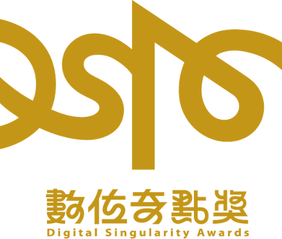

金獎Gold
最佳顧客旅程介面設計商務行銷獎
- Project
- My Volkswagen App
- Client
- Volkswagen Taiwan
- Role
- UI Lead Design · UX Research
參與 Volkswagen 數位體驗專案，負責 UI Lead Design，並參與 UX Research，與 UX、PM、Martech 及開發團隊共同完成產品設計與落地。
觀看作品影片在未知的世界裡，
一起探索設計的更多可能！
我是 Harvey 黃威霖，擁有 7+ 年經驗的設計師，擅長將複雜需求轉化為清晰、直覺且具視覺吸引力的數位體驗。
以 UI Design 與 Design System 為核心，並以 UX 思維支撐設計決策，作品橫跨數位產品、互動體驗與品牌 Campaign。
與 PM、RD 及跨部門團隊緊密合作，從需求釐清、介面設計到產品落地，完整參與設計流程。
負責數位產品與品牌體驗設計，從 UX Strategy、產品架構到 UI Design 與 Design System，協助企業將商業需求轉化為具體且可落地的數位體驗。同時擔任 UI Lead，參與設計團隊的專案規劃、設計方向、品質把關與跨部門協作。
參與企業數位產品與服務體驗規劃，將商業需求與使用者需求轉化為具體的 UX/UI 解決方案。與 PM、RD 及跨職能團隊合作，從前期需求釐清到設計執行與開發落地，完整參與產品設計流程。
負責網站、App、Campaign 與互動數位產品的 UI/UX 設計，參與從概念發想到實際落地的完整設計流程。服務台灣在地品牌及國際企業客戶，累積跨產業、多平台的數位產品與品牌體驗設計經驗。
參與數位活動與品牌體驗設計，曾執行 4 場大型 Campaign Website 的 Key Visual 與網站體驗規劃。與時尚編輯及團隊合作，從品牌特色與活動概念出發，將視覺創意轉化為符合 RWD 規範且具吸引力的數位體驗。
從商業目標與使用者需求出發，釐清問題並制定具體且可執行的體驗策略。
將複雜的資訊與操作流程重新組織，建立清晰且直覺的使用者旅程。
透過質化與量化洞察及使用者測試，驗證設計方向並持續改善產品體驗。
設計網站、App 與數位產品的完整介面體驗，兼顧使用性、視覺表現與品牌特色。
結合視覺系統、互動模式與動態體驗，創造具吸引力且易於理解的數位介面。
規劃不同裝置與螢幕尺寸下的體驗，維持一致且流暢的使用感受。
建立與維護可擴充的 Design System，提升產品體驗的一致性與設計效率。
設計可重複使用的 UI Components 與 Patterns，提升設計與開發效率。
建立設計原則與規範，維持跨產品、跨平台的設計一致性。
與 PM、RD、編輯及其他利害關係人合作，確保設計從概念順利落地。
擔任 UI Lead，負責設計方向、任務分配、設計品質把關與團隊協作。

參與 Volkswagen 數位體驗專案，負責 UI Lead Design，並參與 UX Research，與 UX、PM、Martech 及開發團隊共同完成產品設計與落地。
觀看作品影片參與全聯小時達數位體驗設計，負責 User Flow、Wireframe 與 UI Design，從使用者旅程與操作流程出發，規劃完整的數位體驗。
觀看作品影片任何專案想法或合作機會，
歡迎與我聯絡。